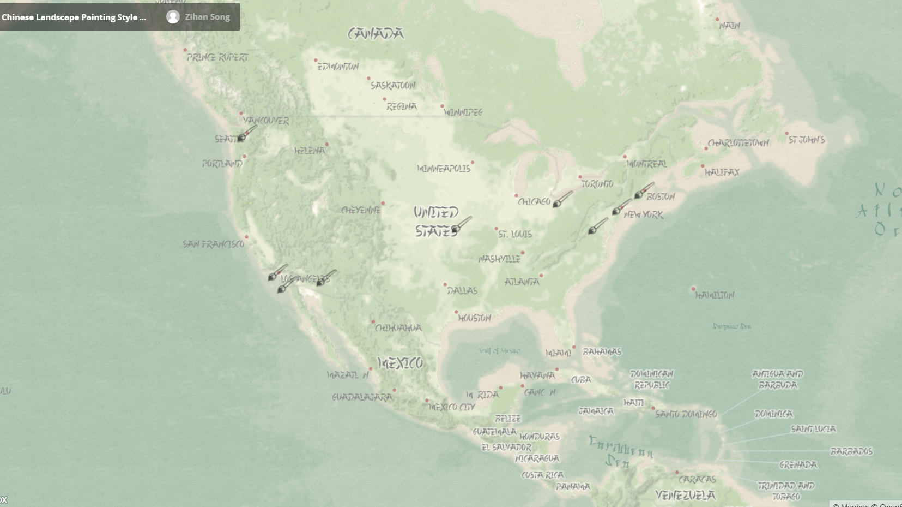

Toggle navigation
Menu
Zihan Song
WORK
ABOUT
BLOG
Chinese Landscape Painting Style
In heaven, paradise; on earth, Suzhou and Hangzhou
--Chinese Proverb

This is a map mimic Chinese Landscape Painting. I designed the map based on four aspects for finishing this pastiche.
Form: I used very thin and subtle linework. I added transparency and use blur effects because the boundaries between features should be vague based on the style I mimic. Also, I used brush tool in Illustrator to draw the symbol, as I want to display the hand-drawn variations.
Color: the colors are restrained and I used small palette. All these colors are light and subtle as I want to mimic the ancient Chinese landscapes. The red is only used for city symbols and black is used for point of interest for making a visual hierarchy. Transparency and blurs effects were used for mimic the inky look. Different land covers are with different shades of green, as the main color of Chinese landscape painting is green.
Type: I downloaded some Asian and Chinese calligraphy style fonts. The typeface should be hand-writing like with lots of variations. And the Asian brush look works good with the whole map. There are not too many labels on the map as if the placement is too dense, it will contradict with my style. The only drawback is some small fonts are hard to read.
Texture: I added some shade reliefs on the map. As the style I mimic is natural landscape, so it makes sense if I added some natural land cover and shade reliefs on the map. And I also used blur on them so they could add some complexity on the map but won’t be too information-heavy. I used antique paper pattern for background texture, as I thought if the background is too smooth, the antique or ancient style won’t be obvious. The history of Chinese Landscape Painting is with hundreds of years, so I used antique paper to add some embellishments.